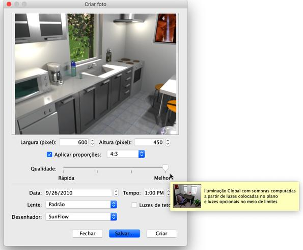

|
Para criar imagens ou fotos em 3D de sua casa, escolha a
Vis�o 3D > Criar Foto... ou click na ferramenta Criar foto
 FerramentaCriar foto FerramentaCriar foto
Isto ir� mostrar a seguinte caixa de di�logo mostrando o tamanho, qualidade e,
possivelmente, outras configura��es utilizadas durante o processo de cria��o de
imagem, juntamente com o bot�o "Criar", que lan�a o carregamento da imagem, e o
bot�o Salvar... que lhe permitir� salvar a imagem mostrada, uma vez carregados.

Se o tamanho padr�o da imagem n�o satisfaz�-lo, escolha uma largura e altura
diferentes. Quando a caixa de sele��o Aplicar propor��es � selecionada, a
altura da imagem � atualizada automaticamente a cada mudan�a de largura de acordo com
as propor��es indicadas pela caixa de combo box ao lado da caixa de sele��o
Aplicar propor��es.
O controle Qualidade permite que voc� escolha entre os quatro n�veis seguintes,
de pior a melhor qualidade, ou a partir do mais r�pido para a mais lenta renderiza��o,
dependendo da sua forma de pensar
|